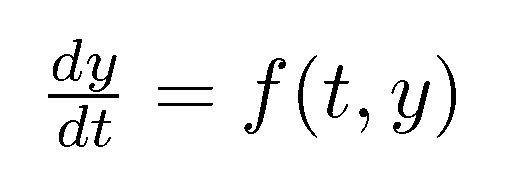
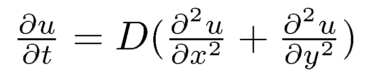
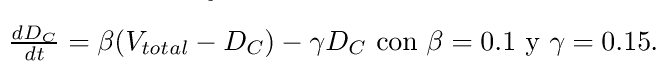

Modelos de Simulación Continua
Esta es una exploración interactiva de la simulación continua, una metodología que nos permite predecir el comportamiento de sistemas que evolucionan de manera fluida en el tiempo. A través de las ecuaciones diferenciales, podemos modelar desde fenómenos físicos hasta complejos sistemas de ingeniería.
Los Ladrillos del Modelo: EDO y EDP
Los sistemas continuos se describen con dos tipos principales de ecuaciones diferenciales. Su diferencia clave radica en cuántas variables independientes consideran.
Ecuaciones Diferenciales Ordinarias (EDO)

Relacionan una función de una sola variable independiente (generalmente el tiempo) con sus derivadas. Son ideales para modelar sistemas donde el estado cambia uniformemente.
$\frac{dy}{dt} = f(t, y)$
Ejemplo: Ley de Enfriamiento
Modela cómo la temperatura de un objeto cambia con el tiempo. El cambio depende solo del tiempo.
Ecuaciones Diferenciales Parciales (EDP)

Involucran funciones de múltiples variables independientes (como tiempo y espacio) y sus derivadas parciales. Se usan para fenómenos que varían en el tiempo y en el espacio.
$\frac{\partial u}{\partial t} = D (\frac{\partial^2 u}{\partial x^2} + \frac{\partial^2 u}{\partial y^2})$
Ejemplo: Ecuación del Calor
Describe cómo se distribuye el calor en un objeto, dependiendo del tiempo y la posición dentro del objeto.
Laboratorio de Simulación Interactivo

Explore un ejemplo de ingeniería de sistemas: la contaminación de datos en una base de datos distribuida. Utilice los controles para ver en tiempo real cómo las tasas de contaminación y limpieza afectan la salud del sistema.
Panel de Control
Resultados Clave
Nivel de Contaminación (Equilibrio):
0.00 %
Estado del Sistema:
Estable
Implicaciones en Ingeniería de Sistemas
Predicción
Estimar cuántos datos se corromperán en un periodo dado.
Optimización
Determinar la tasa de limpieza necesaria para mantener la corrupción bajo control.
Planificación
Justificar la inversión en herramientas de monitoreo y arquitecturas más robustas.